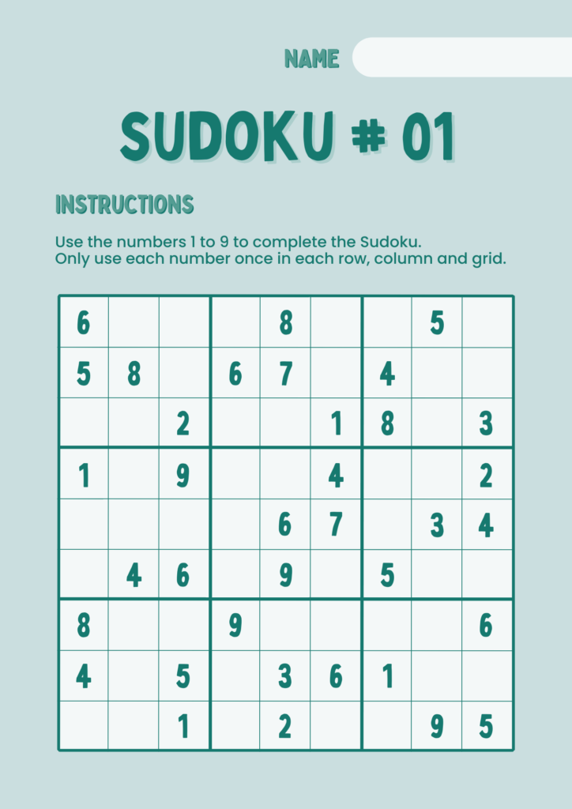

Beautiful Sudoku Solver by Peter Norvig
Python code that solves any Sudoku puzzles systematically

I recently came across Peter Norvig’s Solving Every Sudoku Puzzle. I was impressed with his concise and beautiful Sudoku Solver Python code that solves any Sudoku puzzles systematically.
However, some people may struggle to understand the concise code and cannot appreciate the beauty. I will break down his article and explain the code step-by-step.
Note: the original article by Peter uses Python 2, but I’m using Python 3 in this article. In some places, I changed the indentation of Peter’s code, but I did not alter his program logic.
1 The Rule of Sudoku
If you are unfamiliar with Sudoku, I recommend visiting Sudoku Dragon and reading their Sudoku rule description.
Peter gives a beautiful summary of its rule in one sentence.
A puzzle is solved if the squares in each unit are filled with a permutation of the digits 1 to 9.
It may not be obvious at first glance if you don’t know what squares and units are.
1.1 Squares
A Sudoku puzzle is a grid of 81 squares; the majority of enthusiasts label the columns 1–9, the rows A-I, and call a collection of nine squares (column, row, or box) a unit.
A1 A2 A3| A4 A5 A6| A7 A8 A9
B1 B2 B3| B4 B5 B6| B7 B8 B9
C1 C2 C3| C4 C5 C6| C7 C8 C9
--------+---------+---------
D1 D2 D3| D4 D5 D6| D7 D8 D9
E1 E2 E3| E4 E5 E6| E7 E8 E9
F1 F2 F3| F4 F5 F6| F7 F8 F9
--------+---------+---------
G1 G2 G3| G4 G5 G6| G7 G8 G9
H1 H2 H3| H4 H5 H6| H7 H8 H9
I1 I2 I3| I4 I5 I6| I7 I8 I9So, C2 is a square at the intersection of the third row (which is C) and the second column (which is 2).
1.2 The digits, rows and cols
Peter defines digits, rows, and cols as strings.
digits = '123456789'
rows = 'ABCDEFGHI'
cols = digitsA string can be treated as a list of characters, and you can access each element using for loop.
for a in digits:
print(a)It should output the below:
1
2
3
4
5
6
7
8
9You might be wondering why Peter defines cols = digits. Why do we need two names for the same thing? After all, they are both the same character sequence. It will be clear as you read further in his program. You will appreciate that Peter uses digits and cols appropriately for better readability.
For now, just remember the following. When you see digits in his code, you should consider them a list of digits from ‘1’ to ‘9’. When you see cols, you should consider it a list of column identifiers from ‘1’ to ‘9’. Both are exactly the same values, but their semantics are different.
1.3 The cross function
A list of squares can be composed in the following code:
squares = []
for a in rows:
for b in cols:
squares.append(a+b)In the above code, a+b is not a mathematical operation. It is a string concatenation operation. The character from a and the character from b are concatenated (i.e. joined). For example, when a=’A’ and b=’1', a+b yields ‘A1’.
> print(squares)
['A1', 'A2', 'A3', 'A4', 'A5', 'A6', 'A7', 'A8', 'A9', 'B1', 'B2', 'B3', 'B4', 'B5', 'B6', 'B7', 'B8', 'B9', 'C1', 'C2', 'C3', 'C4', 'C5', 'C6', 'C7', 'C8', 'C9', 'D1', 'D2', 'D3', 'D4', 'D5', 'D6', 'D7', 'D8', 'D9', 'E1', 'E2', 'E3', 'E4', 'E5', 'E6', 'E7', 'E8', 'E9', 'F1', 'F2', 'F3', 'F4', 'F5', 'F6', 'F7', 'F8', 'F9', 'G1', 'G2', 'G3', 'G4', 'G5', 'G6', 'G7', 'G8', 'G9', 'H1', 'H2', 'H3', 'H4', 'H5', 'H6', 'H7', 'H8', 'H9', 'I1', 'I2', 'I3', 'I4', 'I5', 'I6', 'I7', 'I8', 'I9']We can use the list comprehension technique to make it more concise.
squares = [a+b for a in rows for b in cols]Finally, the below shows Peter’s code. He defines a function cross to make the code more readable.
def cross(A, B):
"Cross product of elements in A and elements in B."
return [a+b for a in A for b in B]
squares = cross(rows, cols)Therefore, the function cross generates all cross products of characters from rows and cols. The squares variable points to a list of all the 81 squares.
1.4 Unit List
Every square has exactly 3 units
There are 81 squares on the Sudoku board and each square has exactly 3 units (no less, no more).
For example, the 3 units of the square C2 are shown below:
The column-unit of C2
A2 | |
B2 | |
C2 | |
----------+----------+---------
D2 | |
E2 | |
F2 | |
----------+----------+---------
G2 | |
H2 | |
I2 | |
The row-unit of C2
| |
| |
C1 C2 C3 | C4 C5 C6 | C7 C8 C9
----------+----------+---------
| |
| |
| |
----------+----------+---------
| |
| |
| |
The box unit of C2
A1 A2 A3 | |
B1 B2 B3 | |
C1 C2 C3 | |
----------+----------+---------
| |
| |
| |
----------+----------+---------
| |
| |
| |
The column, the row, and the box (3x3 area) that contains square C2 are the 3 units of square C2.
In total, there are 27 units on the Sudoku board. They are 9 column units, 9 row units, and 9 box units.
We can use the function cross to generate the 9 column units:
> [cross(rows, c) for c in cols]
[['A1', 'B1', 'C1', 'D1', 'E1', 'F1', 'G1', 'H1', 'I1'],
['A2', 'B2', 'C2', 'D2', 'E2', 'F2', 'G2', 'H2', 'I2'],
['A3', 'B3', 'C3', 'D3', 'E3', 'F3', 'G3', 'H3', 'I3'],
['A4', 'B4', 'C4', 'D4', 'E4', 'F4', 'G4', 'H4', 'I4'],
['A5', 'B5', 'C5', 'D5', 'E5', 'F5', 'G5', 'H5', 'I5'],
['A6', 'B6', 'C6', 'D6', 'E6', 'F6', 'G6', 'H6', 'I6'],
['A7', 'B7', 'C7', 'D7', 'E7', 'F7', 'G7', 'H7', 'I7'],
['A8', 'B8', 'C8', 'D8', 'E8', 'F8', 'G8', 'H8', 'I8'],
['A9', 'B9', 'C9', 'D9', 'E9', 'F9', 'G9', 'H9', 'I9']]Similarly, we can generate the 9 row units:
> [cross(r, cols) for r in rows]
[['A1', 'A2', 'A3', 'A4', 'A5', 'A6', 'A7', 'A8', 'A9'],
['B1', 'B2', 'B3', 'B4', 'B5', 'B6', 'B7', 'B8', 'B9'],
['C1', 'C2', 'C3', 'C4', 'C5', 'C6', 'C7', 'C8', 'C9'],
['D1', 'D2', 'D3', 'D4', 'D5', 'D6', 'D7', 'D8', 'D9'],
['E1', 'E2', 'E3', 'E4', 'E5', 'E6', 'E7', 'E8', 'E9'],
['F1', 'F2', 'F3', 'F4', 'F5', 'F6', 'F7', 'F8', 'F9'],
['G1', 'G2', 'G3', 'G4', 'G5', 'G6', 'G7', 'G8', 'G9'],
['H1', 'H2', 'H3', 'H4', 'H5', 'H6', 'H7', 'H8', 'H9'],
['I1', 'I2', 'I3', 'I4', 'I5', 'I6', 'I7', 'I8', 'I9']]For the 9 box units, we break rows and cols into 3 groups and generate cross products.
> [cross(rs, cs) for rs in ('ABC','DEF','GHI') for cs in ('123','456','789')]
[['A1', 'A2', 'A3', 'B1', 'B2', 'B3', 'C1', 'C2', 'C3'],
['A4', 'A5', 'A6', 'B4', 'B5', 'B6', 'C4', 'C5', 'C6'],
['A7', 'A8', 'A9', 'B7', 'B8', 'B9', 'C7', 'C8', 'C9'],
['D1', 'D2', 'D3', 'E1', 'E2', 'E3', 'F1', 'F2', 'F3'],
['D4', 'D5', 'D6', 'E4', 'E5', 'E6', 'F4', 'F5', 'F6'],
['D7', 'D8', 'D9', 'E7', 'E8', 'E9', 'F7', 'F8', 'F9'],
['G1', 'G2', 'G3', 'H1', 'H2', 'H3', 'I1', 'I2', 'I3'],
['G4', 'G5', 'G6', 'H4', 'H5', 'H6', 'I4', 'I5', 'I6'],
['G7', 'G8', 'G9', 'H7', 'H8', 'H9', 'I7', 'I8', 'I9']]We combine all 3 groups of the units into one list. Peter defines unitlist as follows:
unitlist = ([cross(rows, c) for c in cols] +
[cross(r, cols) for r in rows] +
[cross(rs, cs) for rs in ('ABC','DEF','GHI') for cs in ('123','456','789')])Let’s see the number of units:
> print(len(unitlist))
27We know that there are 3 units for each square. This can be expressed in a Python dictionary as follows:
units = {}
for s in squares:
for u in unitlist:
if s in u:
if s not in units:
units[s] = []
units[s].append(u)This dictionary uses square values as keys and a list of units as values. For example, the 3 units of ‘C2’ can be accessed as follows:
> units['C2']
[['A2', 'B2', 'C2', 'D2', 'E2', 'F2', 'G2', 'H2', 'I2'],
['C1', 'C2', 'C3', 'C4', 'C5', 'C6', 'C7', 'C8', 'C9'],
['A1', 'A2', 'A3', 'B1', 'B2', 'B3', 'C1', 'C2', 'C3']]Peter uses much more concise code to achieve the same.
units = dict((s, [u for u in unitlist if s in u]) for s in squares)1.5 The Rule of Sudoku (Once Again)
Now that you know squares and units, we are ready to appreciate Peter’s definition of the Sudoku rule:
A puzzle is solved if the squares in each unit are filled with a permutation of the digits 1 to 9.
If it is not yet very clear, you should really visit Sudoku Dragon and read their description of the Sudoku rule. Otherwise, it will not make any sense to read what comes after here.
1.6 Peers
There is one more terminology we need to introduce before talking about Peter’s Sudoku Solver. It’s called peers.
Let me give an example first. The peers of C2 are all squares in the related 3 units except for C2 itself.
C2_peers = set() # keep unique values using set
for unit in units['C2']: # the 3 units of C2:
for square in unit: # all squares in the current unit
if square != 'C2':
C2_peers.add(square)</code></pre>Let’s examine the values of C2_peers:
> print(C2_peers)
{'E2', 'C7', 'A3', 'D2', 'C1', 'A2', 'B3', 'A1', 'G2', 'I2', 'C5', 'C4', 'H2', 'C3', 'B1', 'B2', 'C9', 'C6', 'F2', 'C8'}We can store all peers for all squares in a Python dictionary as follows:
peers = {}
for s in squares:
unit_set = set()
for unit in units[s]:
for square in unit:
if square != s:
unit_set.add(square)
peers[s] = unit_setFor example, all peers of C2 can be accessed as follows:
> print(peers['C2'])
{'E2', 'C7', 'A3', 'D2', 'C1', 'A2', 'B3', 'A1', 'G2', 'I2', 'C5', 'C4', 'H2', 'C3', 'B1', 'B2', 'C9', 'C6', 'F2', 'C8'}The above code has 3 for-loop statements. Can we simplify this using Python’s built-in function?
The answer is yes but you need to know how the Python list addition works. Let’s take a look at the following example.
> a = [1, 2, 3]
> b = [4, 3, 6]
>
> a+b
[1, 2, 3, 4, 3, 6]The addition of two Python lists is a combined list. Now, the same thing can be achieved using the built-in function sum.
> sum([a, b], [])
[1, 2, 3, 4, 3, 6]The function sum takes two arguments. The first argument is an iterable object, and the second argument is the initial value. The function sum will use the second value as the initial value and append each element of the first argument to it. For more details, please refer to the Python online documentation: https://docs.python.org/3/library/functions.html#sum.
The same result can be achieved by the following:
> [] + a + b
[1, 2, 3, 4, 3, 6]But using the function sum is more convenient when you have a list of items.
You might have noticed that there are two ’3’s in the combined list. This was deliberate. We can use a set object to have unique values.
> set(sum([a, b], []))
{1, 2, 3, 4, 6}Suppose you want to remove 4 from this set, you can subtract a set that contains only 4.
> set(sum([a, b], [])) - set([4])
{1, 2, 3, 6}Now, we are ready to simplify the 3 for-loop operations into one statement. Peter uses the following statement to express all peers for all squares in a dictionary.
peers = dict((s, set(sum(units[s],[]))-set([s])) for s in squares)Note: units[s] returns a list of 3 units, each of which is a list of squares. The sum function will combine all 3 unit lists into one list, which is a list of all squares in the 3 units. Using set, we keep the unique square values excluding the original square that is used to fetch all 3 units. Finally, the list of squares is stored in the dictionary using the original square as the key.
> print(peers['C2'])
{'B3', 'A2', 'A1', 'G2', 'C5', 'H2', 'B2', 'E2', 'C7', 'D2', 'C1', 'A3', 'I2', 'C4', 'C3', 'B1', 'C9', 'C6', 'F2', 'C8'}Each square has exactly 20 peers.
1.7 Unit Testing Squares, Units and Peers
After defining squares, units, and peers, Peter tests the values.
def test():
"A set of unit tests."
assert len(squares) == 81
assert len(unitlist) == 27
assert all(len(units[s]) == 3 for s in squares)
assert all(len(peers[s]) == 20 for s in squares)
assert units['C2'] == [
['A2', 'B2', 'C2', 'D2', 'E2', 'F2', 'G2', 'H2', 'I2'],
['C1', 'C2', 'C3', 'C4', 'C5', 'C6', 'C7', 'C8', 'C9'],
['A1', 'A2', 'A3', 'B1', 'B2', 'B3', 'C1', 'C2', 'C3']]
assert peers['C2'] == set(
['A2', 'B2', 'D2', 'E2', 'F2', 'G2', 'H2', 'I2',
'C1', 'C3', 'C4', 'C5', 'C6', 'C7', 'C8', 'C9',
'A1', 'A3', 'B1', 'B3'])
print('All tests pass.')Let’s run the test.
> test()
All tests pass.2 Initial Representation of Sudoku Puzzle
Peter’s Sudoku Solver accepts the various representations as input.
The following string is one such example:
"4.....8.5.3..........7......2.....6.....8.4......1.......6.3.7.5..2.....1.4......"The first 9 characters make up the first row, the second 9 characters make up the second row, and so on. All dots are interpreted as empty squares.
Below is another representation:
"""
400000805
030000000
000700000
020000060
000080400
000010000
000603070
500200000
104000000"""Here, all zero characters are interpreted as empty squares. New lines are ignored.
Below is yet another example:
"""
4 . . |. . . |8 . 5
. 3 . |. . . |. . .
. . . |7 . . |. . .
------+------+------
. 2 . |. . . |. 6 .
. . . |. 8 . |4 . .
. . . |. 1 . |. . .
------+------+------
. . . |6 . 3 |. 7 .
5 . . |2 . . |. . .
1 . 4 |. . . |. . .
"""Anything other than ‘0’, ‘1’, ‘2’, ‘3’, ‘4’, ‘5’, ‘6’, ‘7’, ‘8’, ‘9’ and ‘.’ are ignored such as ‘|’ and ‘+’.
Suppose we want to parse the following initial values stored in grid1:
grid1 = """
4 . . |. . . |8 . 5
. 3 . |. . . |. . .
. . . |7 . . |. . .
------+------+------
. 2 . |. . . |. 6 .
. . . |. 8 . |4 . .
. . . |. 1 . |. . .
------+------+------
. . . |6 . 3 |. 7 .
5 . . |2 . . |. . .
1 . 4 |. . . |. . .
"""The following will extract only the values we need.
grid1_chars = []
for c in grid1:
if c in digits or c in '0.':
grid1_chars.append(c)
assert len(grid1_chars) == 81Let’s examine the grid1_chars:
> print(grid1_chars)
['4', '.', '.', '.', '.', '.', '8', '.', '5', '.', '3', '.', '.', '.', '.', '.', '.', '.', '.', '.', '.', '7', '.', '.', '.', '.', '.', '.', '2', '.', '.', '.', '.', '.', '6', '.', '.', '.', '.', '.', '8', '.', '4', '.', '.', '.', '.', '.', '.', '1', '.', '.', '.', '.', '.', '.', '.', '6', '.', '3', '.', '7', '.', '5', '.', '.', '2', '.', '.', '.', '.', '.', '1', '.', '4', '.', '.', '.', '.', '.', '.']Then, we can store the values in a dictionary using each square as a key and the corresponding value in char values as a value.
grid1_values = {}
for k, v in zip(squares, grid1_chars):
grid1_values[k] = vzip here takes two lists and creates iterable tuples. For more details, please refer to the Python online documentation: https://docs.python.org/3/library/functions.html#zip.
Peter put all the above into a function as follows:
def grid_values(grid):
"Convert grid into a dict of {square: char} with '0' or '.' for empties."
chars = [c for c in grid if c in digits or c in '0.']
assert len(chars) == 81
return dict(zip(squares, chars))</code></pre>For example, you can call it like below:
> grid1_values = grid_values(grid1)
>
> grid1_values['A1']
'4'3 Constraint Propagation
Knowing initial values for all squares (a digit value or an empty value), we can apply constraints to each square by eliminating impossible values for them. Peter lists two simple rules:
(1) If a square has only one possible value, then eliminate that value from the square’s peers.
(2) If a unit has only one possible place for a value, then put the value there.
Let’s take one step back and imagine that we don’t know the initial values. In this case, all squares can potentially have any digits. We can express this state as follows:
values = dict((s, digits) for s in squares)values is a dictionary that associates each square to all digit values (‘123456789’). As soon as we know the initial values, we can eliminate impossible values from other squares.
As an example of strategy (1), ‘A1’ is ‘4’ in grid1_values. That means ‘A1’ can only have ‘4’ as its value, and we can remove ‘4’ from its peers.
As an example of strategy (2), as none of A2 through I2 except ‘F2’ has ‘4’ as a possible value in grid1_values, ‘4’ must belong to ‘F2’ and we can eliminate ‘4’ from the peers of ‘F2’.
So, while we assign initial values for each square, we also eliminate them from the peers.
This process is called constraint propagation.
3.1 The parse_grid function
The outcome of this parsing process leaves only possible values for each square. Peter defines a function to handle this as follows:
def parse_grid(grid):
"""Convert grid to a dict of possible values, {square: digits}, or
return False if a contradiction is detected."""
## To start, every square can be any digit; then assign values from the grid.
values = dict((s, digits) for s in squares)
for s,d in grid_values(grid).items():
if d in digits and not assign(values, s, d):
return False ## (Fail if we can't assign d to square s.)
return valuesIn the above function,
- values are given digits as the initial value in a dictionary where each square is used as a key.
- The given grid contains the initial representation of Sudoku puzzle.
- We use grid_values function to extract only relevant values (digits, ‘0’ and ‘.’).
- For each square with initial digit value, we call the assign function to assign the value to the square while eliminating it from the peers
- If something goes wrong in the assign function, it returns False to signify the failure
- If no errors, the function returns the values dictionary back to the caller
The assign function is not yet defined here. Other than that, the parse_grid function should be self-explanatory if you read it line by line.
3.2 The assign functions
The function assign(values, s, d) updates the incoming values by eliminating the other values than d from the square s calling the function to eliminate(values, s, d).
If any eliminate call returns False, the function assign returns False indicating that there is a contradiction.
def assign(values, s, d):
"""Eliminate all the other values (except d) from values[s] and propagate.
Return values, except return False if a contradiction is detected."""
other_values = values[s].replace(d, '')
if all(eliminate(values, s, d2) for d2 in other_values):
return values
else:
return False3.3 The eliminate function
So what does the eliminate function do?
- It removes the given value d from values[s] which is a list of potential values for s.
- If there is no values left in values[s] (that is we don’t have any potential value for that square), returns False
- When there is only one potential value for s, it removes the value from all the peers of s (the value is for s and the peers can not have it to satisfy the Sudoku rule) <== strategy (1)
- Make sure the given value d has a place elsewhere (i.e., if no square has d as a potential value, we can not solve the puzzle). If this test fails, it returns False
- Where there is only one place for the value d, remove it from the peers <== strategy (2)
The function is a bit lengthy but if you have followed the discussion so far, you should be able to understand it.
def eliminate(values, s, d):
"""Eliminate d from values[s]; propagate when values or places <= 2.
Return values, except return False if a contradiction is detected."""
if d not in values[s]:
return values ## Already eliminated
values[s] = values[s].replace(d,'')
## (1) If a square s is reduced to one value d2, then eliminate d2 from the peers.
if len(values[s]) == 0:
return False ## Contradiction: removed last value
elif len(values[s]) == 1:
d2 = values[s]
if not all(eliminate(values, s2, d2) for s2 in peers[s]):
return False
## (2) If a unit u is reduced to only one place for a value d, then put it there.
for u in units[s]:
dplaces = [s for s in u if d in values[s]]
if len(dplaces) == 0:
return False ## Contradiction: no place for this value
elif len(dplaces) == 1:
# d can only be in one place in unit; assign it there
if not assign(values, dplaces[0], d):
return False
return values3.4 The display function
By calling parse_grid, we know what are the potential values for each square. Naturally, we want to display the result.
def display(values):
"Display these values as a 2-D grid."
width = 1+max(len(values[s]) for s in squares)
line = '+'.join(['-'*(width*3)]*3)
for r in rows:
print(''.join(values[r+c].center(width)+('|' if c in '36' else '') for c in cols))
if r in 'CF':
print(line)
print()I’m not going to explain the details of this function. If you are curious, play with it by changing here and there, and you’ll know how it works.
Below is an example output.
> grid2 = '4.....8.5.3..........7......2.....6.....8.4......1.......6.3.7.5..2.....1.4......'
> display(parse_grid(grid2))
4 1679 12679 | 139 2369 269 | 8 1239 5
26789 3 1256789 | 14589 24569 245689 | 12679 1249 124679
2689 15689 125689 | 7 234569 245689 | 12369 12349 123469
------------------------+------------------------+------------------------
3789 2 15789 | 3459 34579 4579 | 13579 6 13789
3679 15679 15679 | 359 8 25679 | 4 12359 12379
36789 4 56789 | 359 1 25679 | 23579 23589 23789
------------------------+------------------------+------------------------
289 89 289 | 6 459 3 | 1259 7 12489
5 6789 3 | 2 479 1 | 69 489 4689
1 6789 4 | 589 579 5789 | 23569 23589 23689So, for example, the square C2 has 15689 as a list of possible values.
Can we enhance the eliminate function further to remove more values by implementing strategies like the naked twins?
It’s possible to pursue that route. But Peter says otherwise:
Coding up strategies like this is a possible route, but would require hundreds of lines of code (there are dozens of these strategies), and we’d never be sure if we could solve every puzzle.
4 Search
So, what is the alternative to solving every Sudoku puzzle?
The other route is to search for a solution: to systematically try all possibilities until we hit one that works. The code for this is less than a dozen lines…
Sounds nice. But…Peter continues:
…we run another risk: that it might take forever to run. Consider that in the grid2 above, A2 has 4 possibilities (1679) and A3 has 5 possibilities (12679); together that’s 20, and if we keep multiplying, we get 4.62838344192 × 1038 possibilities for the whole puzzle.
Peter further explains his search algorithm:
- first make sure we haven’t already found a solution or a contradiction, and if not,
- choose one unfilled square and consider all its possible values.
- One at a time, try assigning the square each value, and searching from the resulting position.
we search for a value d such that we can successfully search for a solution from the result of assigning square s to d. If the search leads to an failed position, go back and consider another value of d. This is a recursive search, and we call it a depth-first search because we (recursively) consider all possibilities under values[s] = d before we consider a different value for s.
Finally, Peter explains how to choose which square to start exploring which is called variable ordering:
we will use a common heuristic called minimum remaining values, which means that we choose the (or one of the) square with the minimum number of possible values. Why? Consider grid2 above. Suppose we chose B3 first. It has 7 possibilities (1256789), so we’d expect to guess wrong with probability 6/7. If instead we chose G2, which only has 2 possibilities (89), we’d expect to be wrong with probability only 1/2. Thus we choose the square with the fewest possibilities and the best chance of guessing right.
For value ordering (Which digit do we try first for the square?), Peter says:
we won’t do anything special; we’ll consider the digits in numeric order.
The following sections explain Peter’s search algorithm.
4.1 The solve function
def solve(grid):
return search(parse_grid(grid))</code></pre>The solve function parses the initial representation and calls the search function.
4.2 The search function
def search(values):
"Using depth-first search and propagation, try all possible values."
if values is False:
return False ## Failed earlier
if all(len(values[s]) == 1 for s in squares):
return values ## Solved!
## Chose the unfilled square s with the fewest possibilities
n,s = min((len(values[s]), s) for s in squares if len(values[s]) > 1)
return some(search(assign(values.copy(), s, d)) for d in values[s])</code></pre>- If every square has exactly one value, the puzzle is solved.
- Select a square with minimum number of potential values, and call assign to eliminate a potential value from the peers
- Call the search function recursively by passing the values after the above elimination
Note: values are copied and passed down to the assign call to avoid book-keeping complexity.
If one of the attempts succeeds, we solved the puzzle. To check this, the function some is used.
def some(seq):
"Return some element of seq that is true."
for e in seq:
if e: return e
return False</code></pre>That’s all. We have a Solver that works for any Sudoku.
5 The Complete Solver Code
For your reference, I put Peter’s complete Sudoku Solver code here.
def cross(A, B):
"Cross product of elements in A and elements in B."
return [a+b for a in A for b in B]
digits = '123456789'
rows = 'ABCDEFGHI'
cols = digits
squares = cross(rows, cols)
unitlist = ([cross(rows, c) for c in cols] +
[cross(r, cols) for r in rows] +
[cross(rs, cs) for rs in ('ABC','DEF','GHI') for cs in ('123','456','789')])
units = dict((s, [u for u in unitlist if s in u])
for s in squares)
peers = dict((s, set(sum(units[s],[]))-set([s]))
for s in squares)
def parse_grid(grid):
"""Convert grid to a dict of possible values, {square: digits}, or
return False if a contradiction is detected."""
## To start, every square can be any digit; then assign values from the grid.
values = dict((s, digits) for s in squares)
for s,d in grid_values(grid).items():
if d in digits and not assign(values, s, d):
return False ## (Fail if we can't assign d to square s.)
return values
def grid_values(grid):
"Convert grid into a dict of {square: char} with '0' or '.' for empties."
chars = [c for c in grid if c in digits or c in '0.']
assert len(chars) == 81
return dict(zip(squares, chars))
def assign(values, s, d):
"""Eliminate all the other values (except d) from values[s] and propagate.
Return values, except return False if a contradiction is detected."""
other_values = values[s].replace(d, '')
if all(eliminate(values, s, d2) for d2 in other_values):
return values
else:
return False
def eliminate(values, s, d):
"""Eliminate d from values[s]; propagate when values or places <= 2.
Return values, except return False if a contradiction is detected."""
if d not in values[s]:
return values ## Already eliminated
values[s] = values[s].replace(d,'')
## (1) If a square s is reduced to one value d2, then eliminate d2 from the peers.
if len(values[s]) == 0:
return False ## Contradiction: removed last value
elif len(values[s]) == 1:
d2 = values[s]
if not all(eliminate(values, s2, d2) for s2 in peers[s]):
return False
## (2) If a unit u is reduced to only one place for a value d, then put it there.
for u in units[s]:
dplaces = [s for s in u if d in values[s]]
if len(dplaces) == 0:
return False ## Contradiction: no place for this value
elif len(dplaces) == 1:
# d can only be in one place in unit; assign it there
if not assign(values, dplaces[0], d):
return False
return values
def solve(grid): return search(parse_grid(grid))
def search(values):
"Using depth-first search and propagation, try all possible values."
if values is False:
return False ## Failed earlier
if all(len(values[s]) == 1 for s in squares):
return values ## Solved!
## Chose the unfilled square s with the fewest possibilities
n,s = min((len(values[s]), s) for s in squares if len(values[s]) > 1)
return some(search(assign(values.copy(), s, d))
for d in values[s])
def some(seq):
"Return some element of seq that is true."
for e in seq:
if e: return e
return False</code></pre>There are results reported in the article which show how well it works.
6 Why?
In the end, Peter explains why he did this project:
As computer security expert Ben Laurie has stated, Sudoku is “a denial of service attack on human intellect”. Several people I know (including my wife) were infected by the virus, and I thought maybe this would demonstrate that they didn’t need to spend any more time on Sudoku.
7 Conclusion
I hope this article finds some use for people having a hard time understanding Peter Norvig’s Sudoku solver article which is an excellent one but requires the reader to have a certain level of Python mastery.

8 References
- Solving Every Sudoku Puzzle
Peter Norvig - Solving Any Sudoku Puzzle
Peter Norvig’s Python notebook